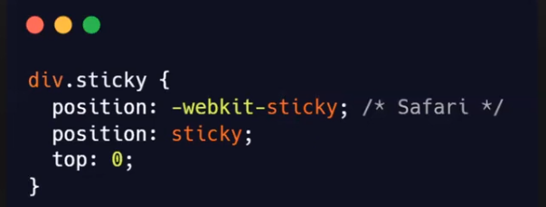
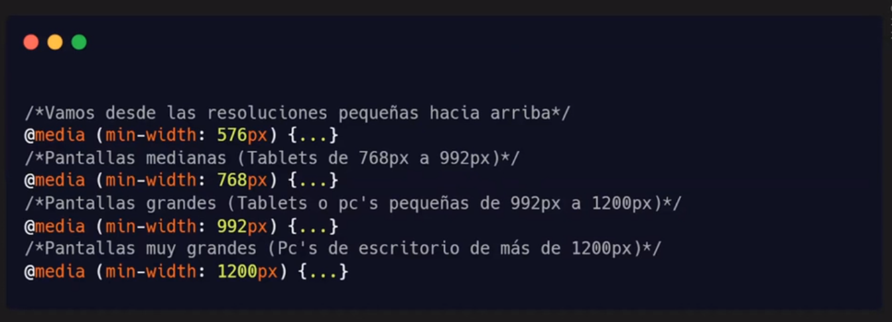
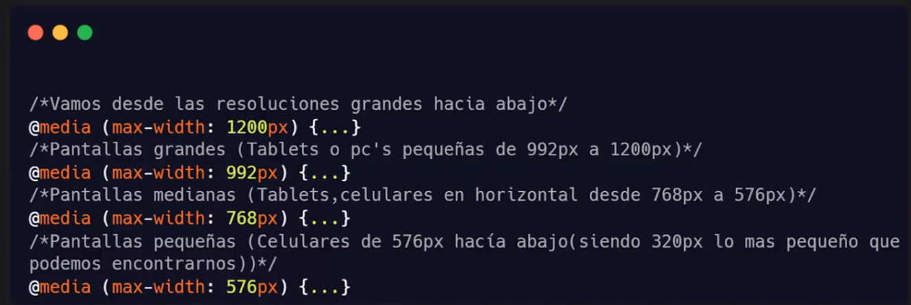

coloca un elemento segun la posicion de desplazamiento dek usuario
se coloca en una posicion relativa hasta que se alcanza una posicion determinada en la ventana grafica luego se "pega en su lugar (como la posicion fija)". es como un posicion: relative y un fixed
NOTA IMPORTANTE internet exploret, edge 15 y versiones anteriores no admiten el posicionamiento fijo. safari requiere un prefijo -wewbkit-
nos permiten añadir efectos de colores degradados en nueestros diseños
se configuran como los fondos por lo que tendremos que usar la propiedad de backaground
leer este enalce para mas informacion mas info
aca un mini enlace para una pagina en donde podemos generar gradientes https://cssgradient.io/
tambien se puede hacer que se repita
tambien existen gradientes radiales y se pueden agregar cuantos colores querramos pero ya eso depende de lo que nesesitemos
que son las media queries?
son fundamentales ene el diseño web actual ya que son la base del diseño responsive(responsivo o adaptable).
esto significa que con una misma maquetacion html nuestro diseño se adaptara a diferentes disposditivos y tipos de pantalla
trae beneficios de SEO (posicionamiento en la web) ya que existen naveegadores como google que penalizan a las paginas web que nos responsive

existen 2 tipos de enfoque desktop firs y movile first que dependiendo de que enfoque tomemos enpezamos a codear desde ahi para los sig dispositivos
movile
desktop
